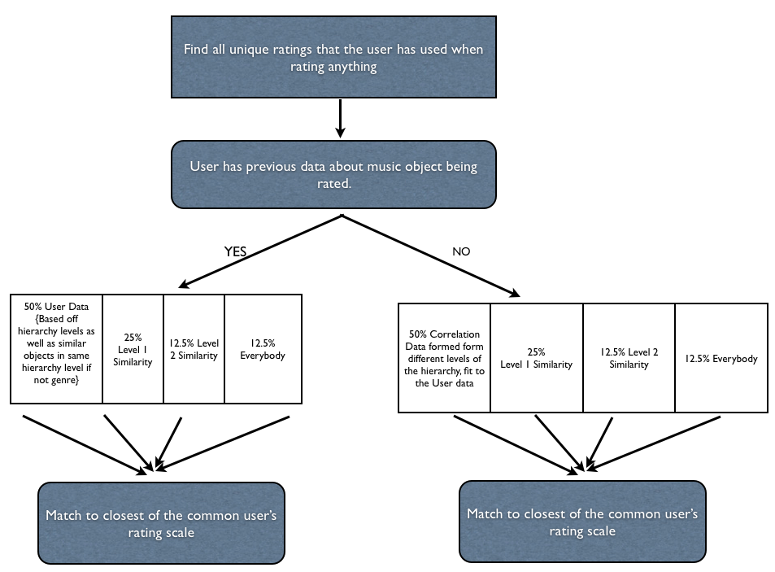

The KDD cup challenge was designed to test the data mining skills of the the world’s best data miners. Unfortunately I’m not one of the worlds best data miners and I don’t have nearly the amount of time that I would need to successfully review the data to form hypotheses and find a very effective solution. Nevertheless, the goal of this project is top start this process and form a hypothetical model of what the model would look like if implemented. I concentrated on analyzing the data, but more importantly I decided to focus on the actual solutions and try to form my basic model on basic feedback I get from the sample size of the data. Due to time constraints I didn’t have time to implement all of the aspects of the model that I have described but the model is incorporating a plethora of aspects to hopefully accurately predict the right rating for each user.
When I first started looking at the data, I realized that it was in a text format. This is a problem. Text formats are generally hard to work with and don’t allow common data mining tools to interpret the data very well. I decided to write a small java program that would format the “trainidx1.firstLines.txt” into a CSV file. At least this allowed me to put that specific file into KNIME and find some initial statistics. I didn’t worry about that section of the Data mining process though. I wanted to get the ratings sorted in different files. The files were going to be based on what type of item was sorted. Process took a long time. I had to look for a specific ID in one of four files (Track, Artist, Album, Genre). I know that setting everything up in a database would have been easier, and possibly faster, but I had some complications when trying to set up a database on my computer so in the interest of time I decided not to deal with it. I wrote another java program that would create 4 different files. Each of the files would have a different item associated with it; title rating, artist rating, etc. The program would find weather the item that is being rated is a song, artist, album or genre. This I think will greatly help in finding a model for prediction. To speed up the program I put the the tracks last in the checking order to maximize the algorithm, by checking the greatest file last instead of first. It only took about 30 min but the data was well worth it.
I decided to take a look at the data without any data-mining tool to being with. It was way too spread out and in different files for me to eye-ball it and pull out anything concrete. I did realize one thing, people don’t tend to use to many increments when rating their data. I decided to research this subject and found that in a 5 start system, most people don’t use the second star. The second least used start was the 1, and that was mostly used to label something that needed to be deleted or change from a playlist. I wanted to confirm this with KNIME and I found that the ratings were in 5 distinct categories (0,30,50,70,100). When looking at tracks individually there was more 90% than any other category. I figured this was because people like to keep the 100 for the best songs they every hear. Also, Itunes has a feature, that plays the top rated. Labeling a song 90% would make it a good song but just not good enough to make the cut for that playlist right away. It seems that people are less and less worried about how harshly they rate a certain category the more and more general it is.
I kept exploring the data to find some sort of explanation to future question I had, realizing that this project was going to bring up a lot of issues later. I started looking at individual people. I started wrote a small program to find the most variations a single person used was 10. I don’t think anybody used a rating ending in a number other than a 0. This kind of knowledge about the dataset was critical in a future model. Other data mining techniques are a little bit skeptical to use. I didn’t think that using clustering of any kind of rule association would help in this situation, because everybody could possbily rate songs differently. This gives a bigger problem to the model.
After taking a look at different clustering algorithms I looked to outside research about musical trends to see if I could get some ideas. This was the single most important aspect to this data mining process that I could have done. I learned that due to the musical composition there are certain trends in musical genres that make them completely opposite. This caused me to think about designing a correlation analysis of different genres. I found out that I don’t have enough data for genre ratings to accurately see a correlation between two different genres. The most ratings for an individual genre is less that 20 which is not enough to form any kind of correlation graph. Nevertheless, we are only allowed access to the sample size of the data. I think this would be a huge part of the model to actually predict the accurate ratings though.
One big problem I ran into was alway trying to compare the different types of artists. I decided to go by users. First I would need to figure out which users are similar. Of course I could use some sort of Euclidean distance, but the common songs that they rated would be to small for any kind of correlation. To do that I would first have to normalize the data. This is because not everybody rates all the songs the same. Some people might always rate the songs a certain way, (i.e. never giving above a 50 on any song), that would make them not similar at all to people who don’t rate anything below 50. So a normalization has to take place to get the data to fit on top of each other correctly. To do this I would have to find the range of scores that every person uses. Then I will have to transfer that range to the 0-100 range, rounding every one of their results to the nearest multiple of 5 to keep some sort of consistency with the rest of the data objects. The normalization equations turned out to be: (rating given)*(100/(highest rating - lowest rating)). Running this equation for each user allowed all of them to get on a normalized scale. This process gave me a little trouble, because I found some users that only used one rating for all of the songs. Those certain people I thought would be the easiest to model so I left their numbers the same.
Of course running the analysis of all of these aspects of the data would be a lot of work but conceptually I thing I am really close to getting a model design that would predict a pretty good outcome. First using the previous data of the user that is in question I would take all the unique ratings that they give. Secondly I would use their data as a primary source of information to feed to the model. Nevertheless, because the user is rating something that he hasn’t been in contact with, using the user’s information alone will only leave us on a half-bling guess on what the rating will be. The other half of the rating information would come from the users. Out of that I would split everything up into 3 levels of similarity. First level would be people who have rated similar musical data objects with relatively the same outcome. This influence would be 50% of the global user data. 25% of the global user data would be the second level similarity of the the population. What I mean by second level similarity would be somebody who has a common ground with level one population, that directly link to the target user’s data.
For example, if user A is the target user of the model. A rates the following artists:
Jay-Z 90
Kanye 80
Tupac 100
Biggie ?
A level 1 user would be one that has similarity direct similarity to the user. B’s Data:
Kanye 90
Tupac 95
Biggie 100
50 Cent 75
Tech n9ne 80
A level 2 (C user) would not have enough connections with A to pass the threshold, but have connections with B (threshold being 2 in this case). C’s Data:
50 Cent 80
Tech n9ne 90
Eminem 100
Biggie 90
The rest of the population of users will make up the last 25% of the voting data. From the public. This way if the user hates Rap, the bad rap scores will be reflected in his own scores as well as in the scores of his peers. Nevertheless, for some unknown reason, if everybody in the world like the song (i.e. see “Party Rock Anthem”), that will have a weighted affect on the user. When the scoring is done the resulting number will not be his score. The person would not provide a rating of 67.5, for example, when every one of his ratings was either a 0 or a 70. The rating will find the closest match to the user’s common ratings to find the right number.
The problem is, that this model doesn’t show is what happens when the user in question is trying to rate something that he hasn’t seen before. Of course it’s easier to predict a model of a rap song if the user is a avid rap listener. What happens when that same user is trying to rate a bluegrass song. The part of the model that is based off of the user instead of the public would be rendered useless. Although the rest of the model would find similar users that rated both bluegrass and rap songs, that wouldn’t result in an accurate model.
The model would have to take into the rest of the public who has similar tastes as the user. This doesn’t necessarly mean level 1 similarity only. An analysis of the user would have to be done. What are his favorite songs, artists but most importantly genres in this case. Then surveying all of the people a correlation analysis, would have to be done. This would be done with placing the users favrorite genre (rap in this case) on one axis and the genre in question on the other axis (bluegrass). The scatter plot that would result would show the correlation between ratings of bluegrass and rap. By fitting the best cure on that scatterplot, an automatic scale can be achieved to find a basis of the rating. This can be done with individual songs and artists as well. After building many correlations, the user data would be based off that instead of just leaving that half of the model empty.
The reason that this correlation would not go into the public section, is because we’re fitting the user data into the public trend instead of finding similarities with individual people. Nevertheless the two processes are very similar. The resulting flowchart would look like the following.

There is one more aspect that needs to be covered though. That is the user data prediction of the model. Predicting the value by finding similarities of he user in other users is a similarity based on the object being rated. When evaluating the user though, we need to look at objects with higher hierarchal attributes that are the same. This lets us get a feel for everything that the user rated that has been in the same, smaller cluster, as the object in question.
Although the model was not successfully built in the time period, this was a very interesting project to go into rating everything. Using the outside information really let the project come together and cover the harder situations that needed to be incorporated as well. Attached are some processes I used to evaluate the data, evaluation has also been done on basic Excel as well as KNIME and Weka when trying to explore and try building simple modeling approaches. I think I have taken resources that the data had to offer, but outside information as well as passion for music let me to different ideas that would really be beneficial for the model.